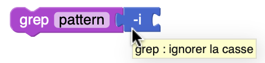
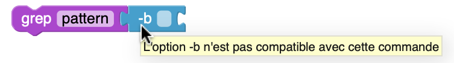
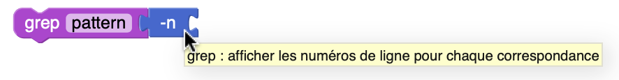

Tooltips
Les tooltips aident l'utilisateur à comprendre à quoi servent les options des commandes Unix disponibles dans l'interface.
Quand une option est dans la boîte à outils ou dans l'espace de travail mais n'est rattachée à aucun bloc, le tooltip sera le nom de l'option.
| Exemple : |
|---|
 |
Quand une option est attachée à une commande, elle va afficher dynamiquement un tooltip :
- Si l'option est compatible avec la commande, cela affichera une description spécifique.
| Exemple : |
|---|
|  |
{kind=link}
- Sinon, cela affichera : "L'option -x n'est pas compatible avec cette commande"
| Exemple : |
|---|
|  |
{kind=link}
Correspondance
Dans la constante optionTooltips, chaque commande est associée à une liste d’options compatibles, classées selon leur type (flag ou field_index), par exemple :
const optionTooltips = {
grep: {
n: {
flag: "grep : afficher les numéros de ligne pour chaque correspondance",
},
i: {
flag: "grep : ignorer la casse",
},
},
head: {
n: {
field_index: "head : afficher les n premières lignes (par défaut : 10)",
},
},
// ...
};
-
La clé principale correspond au nom de la commande (grep, head, etc.).
-
Chaque option (comme n, i, c, etc.) peut être définie avec une description par type :
→ flag pour les options booléennes (ex : -i)
→ field_index pour les options avec argument numérique ou positionnel (ex : -n 10)
Cas particulier
L'affichage des tooltips repose sur la structure optionTooltips, qui associe à chaque commande ses options compatibles, en distinguant leur type (flag et field index).
Si une même lettre d’option (par exemple -n) est définie avec des types différents selon les commandes (flag pour grep, field_index pour head) :
-
Lorsqu’on utilise une option de type
field_indexsur une commande où seule la versionflagest valide, le système affiche un tooltip d’erreur : "L'option -n n'est pas compatible avec cette commande" -
Mais si aucune valeur n’est fournie avec cette option
field_index, le système l’interprète comme un flag, ce qui fonctionne à l'exécution.
Le tooltip affiche une erreur incorrecte, alors que la commande est exécutée normalement.
| Exemple : |
|---|
|  |
 |
{kind=link}